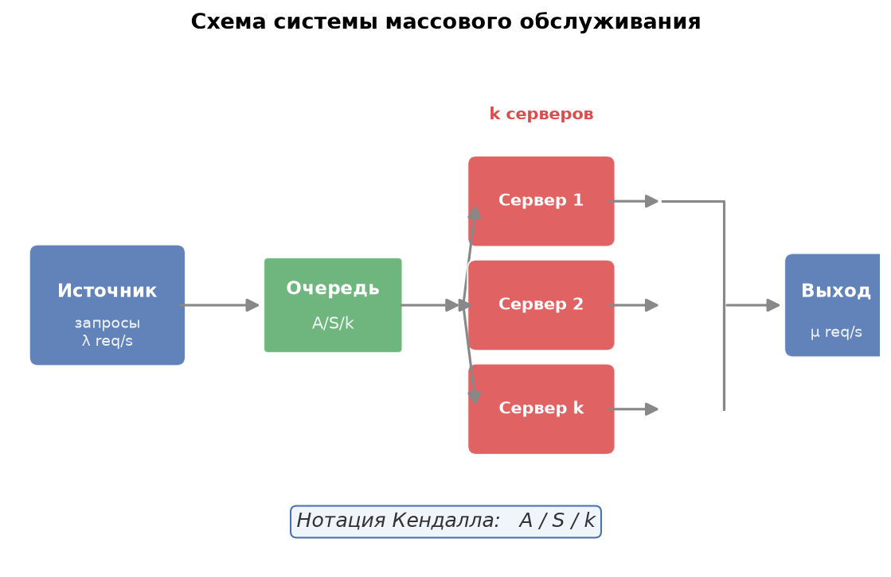
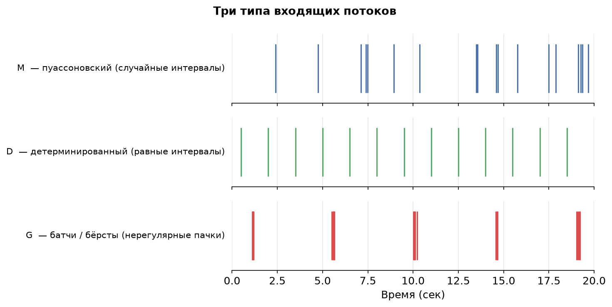
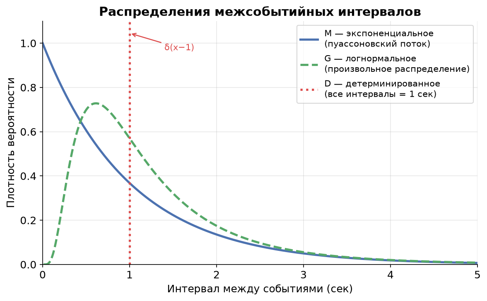

Урок 3. Нотация Кендалла и классификация систем
TL;DR: Чтобы разговаривать об очередях на одном языке и применять нужные формулы, системы описывают в формате A/S/k — три позиции: как приходят запросы, как они обрабатываются и сколько серверов. Основные «буквы»: M (случайный пуассоновский поток), D (строго по таймеру), G (произвольное распределение). Kafka с одним консьюмером и непредсказуемым временем обработки — это M/G/1; от этого класса зависит, какие формулы работают.
В уроке 2 мы познакомились с теоремой Литтла и убедились, что закон $L = \lambda W$ работает при любых распределениях. Но «при любых» — это только для среднего. Как только захочется посчитать хвосты, перцентили или оценить, как меняется хвост при росте нагрузки, придётся знать, с каким именно распределением мы имеем дело. Именно здесь в игру вступает нотация Кендалла.
Зачем нужна единая нотация
Представьте, что коллега говорит: «у нас очередь с одним воркером». Это ничего не говорит о поведении системы. Запросы могут приходить редко и равномерно, а могут взрываться пачками. Воркер может обрабатывать каждый запрос за ровно 50 мс, а может — то за 5 мс, то за 500 мс. Поведение этих систем разительно отличается даже при одинаковой средней нагрузке.
Нотация Кендалла (Kendall's notation) — это трёхсимвольный «паспорт» очереди, который сразу снимает неоднозначность. Она появилась в 1953 году и с тех пор стала общим языком в теории массового обслуживания (queueing theory).
Формат A/S/k
$$A / S / k$$
- A — распределение интервалов между приходами запросов (inter-arrival time).
- S — распределение времени обслуживания одного запроса (service time).
- k — количество серверов (серверов, воркеров, потоков, GPU-слотов — в зависимости от контекста).
Есть расширенные формы вида A/S/k/K/N/D, где K — ёмкость буфера (buffer capacity), N — размер источника запросов, D — дисциплина очереди (FIFO, LIFO, PS). Для курса хватит трёх позиций: именно они определяют тип аналитической модели.
Схема системы

Запросы приходят из источника с интенсивностью $\lambda$ (запросов в секунду), встают в очередь, затем расходятся по $k$ серверам, каждый из которых тратит на запрос время $S$.
Три типа распределений: M, D, G
M — марковское, или пуассоновский поток
Буква M расшифровывается как «марковское» (Markovian). Для интервалов между приходами это означает экспоненциальное распределение (exponential distribution) с плотностью $f(t) = \lambda e^{-\lambda t}$. Для времени обслуживания — тоже экспоненциальное, только с параметром $\mu$.
Почему «марковское»? Экспоненциальное распределение обладает свойством отсутствия памяти (memoryless property): вероятность завершить обработку в следующую секунду одинакова вне зависимости от того, сколько секунд задача уже выполняется. Это делает систему марковской (Markov chain): её будущее полностью определяется текущим состоянием. Подробнее об этом — в уроке 4.
Интуиция пуассоновского потока прихода. Представьте тысячи независимых пользователей, каждый из которых изредка шлёт запрос — скажем, раз в час. Никто из них не координируется с остальными. Тогда суммарный поток запросов подчиняется распределению Пуассона (Poisson process), а интервалы между ними — экспоненциальному. Это фундаментальный результат теории вероятностей: суперпозиция многих редких независимых потоков сходится к пуассоновскому.
Когда поток НЕ пуассоновский:
- Батчи (batch arrivals): Kafka-продюсер, который складывает сообщения в буфер и раз в 100 мс сбрасывает пачку — явно не пуассоновский.
- Ретраи (retries): После ошибки клиент повторяет запрос через фиксированный таймаут. Это создаёт вторичный поток, скоррелированный с первичным.
- Синхронизированные крон-задачи (cron jobs): Сотни микросервисов запускают задачу ровно в 00:00 — это залп, а не пуассоновский поток.
- Тротлинг и rate limiting: Клиент, упёршийся в лимит, шлёт запросы строго по таймеру — ближе к D, чем к M.
D — детерминированное
D означает детерминированное (deterministic): все интервалы между приходами (или времена обслуживания) строго одинаковы. Это идеальный метроном. Примеры: heartbeat-запросы каждые 10 мс, batch-джобы по расписанию с жёстким интервалом, synthetic monitoring.
G — общее, или произвольное
G означает general — произвольное распределение. Мы не предполагаем ничего: это может быть логнормальное, распределение Парето, смесь двух экспонент или что угодно ещё. Буква G используется, когда реальные данные не укладываются в M или D, или когда хочется получить формулы, верные для любого распределения.
Как «выглядят» три типа потоков

На графике хорошо видна разница: - M — кластеры и пробелы: иногда несколько событий подряд, иногда долгая тишина. Это следствие экспоненциального распределения, у которого нет «памяти» — следующее событие не знает, когда было предыдущее. - D — идеально равномерные тики. Нулевая случайность. - G (батчи) — длинные паузы, затем резкий всплеск: так выглядит буферизованный Kafka-продюсер или синхронизированный крон.
Распределения интервалов: что говорит плотность

- Экспоненциальное (M): максимум в нуле, монотонно убывает. Короткие интервалы гораздо вероятнее длинных — именно поэтому пуассоновский поток «кластеризуется».
- Детерминированное (D): дельта-функция в одной точке — вся вероятность сосредоточена в одном значении.
- Логнормальное (G): мода сдвинута от нуля, хвост тяжелее, чем у экспоненциального. Характерно для времени обработки реальных задач: большинство запросов быстрые, единицы — очень медленные.
Классификация реальных систем: практические примеры
Вот алгоритм классификации: сначала смотрим на природу входящего потока (A), затем на время обработки (S), затем считаем воркеры (k).
Kafka с одним консьюмером → M/G/1
Представим: в Kafka-топик пишут сотни независимых микросервисов, каждый изредка публикует событие. Это классическая суперпозиция независимых редких потоков — приближение к пуассоновскому. A = M.
Консьюмер обрабатывает каждое сообщение: делает вызов в базу, что-то вычисляет, иногда попадает в кэш, иногда нет. Время обработки варьируется — ни экспоненциальное, ни детерминированное. S = G.
Один поток-консьюмер. k = 1.
Итог: M/G/1. Это не просто ярлык — для M/G/1 существует точная формула Поллачека–Хинчина (Pollaczek–Khinchine formula), которую мы разберём в уроке 5.
ML-инференс сервис с одним GPU → M/G/1
Запросы на инференс приходят от многих независимых клиентов — пуассоновский поток. A = M.
Время инференса зависит от размера тензора, типа запроса, теплового состояния GPU. Один запрос обрабатывается 5 мс, другой — 200 мс. Никакой фиксированной величины. S = G.
Один GPU-слот (или один воркер на GPU). k = 1.
Итог: тоже M/G/1 — та же модель, что и Kafka. Это и есть смысл нотации: разные физические системы могут иметь одинаковую математическую структуру.
Synthetic monitoring → D/D/1
Сервис каждые 10 мс отправляет пустой ping-запрос (как SelfPing из итоговой практики курса). Интервал строго детерминирован. A = D.
Запрос тривиален — время обработки фиксировано. S = D.
Один поток обработки. k = 1.
Итог: D/D/1 — вырожденный случай, нет случайности вообще.
Пул воркеров для обработки задач → M/G/k
Те же независимые клиенты → A = M.
Произвольное время задачи → S = G.
Пул из $k$ воркеров (thread pool, процессы, реплики) → k.
Итог: M/G/k. Масштабирование числом воркеров — это именно переход от M/G/1 к M/G/k.
Батчевый Kafka-продюсер → G/.../...
Продюсер копит сообщения и сбрасывает пачку каждые 100 мс. Интервалы между пачками детерминированы, но внутри пачки — залп из нескольких сообщений сразу. Это явно не пуассоновский поток, ближе к G или D для интервалов между пачками. Точная модель зависит от деталей, но однозначно не M/G/1.
Зачем всё это нужно
Нотация Кендалла — не академическая формальность. Она напрямую определяет, какие формулы применимы:
| Класс | Что известно | Что можно посчитать |
|---|---|---|
| M/M/1 | Оба распределения экспоненциальные | Точные замкнутые формулы для всего |
| M/G/1 | Приход пуассоновский, обслуживание произвольное | Формула П-Х: средняя очередь через $E[S]$ и $E[S^2]$ |
| G/G/1 | Всё произвольное | Только аппроксимации и симуляция |
| M/M/k | Оба экспоненциальные, k серверов | Формулы Эрланга (Erlang C/B) |
Когда вы идентифицируете свою систему как M/G/1, вы получаете право использовать формулу Поллачека–Хинчина. Если же поток батчевый (не M) или вы игнорируете тяжёлые хвосты времени обработки (используете M вместо G), формула даст неверный результат, обычно заниженный — вы будете думать, что система справляется, хотя на практике хвосты latency будут расти.
Главное из урока
- Нотация A/S/k — трёхбуквенный паспорт системы: тип потока прихода / тип времени обслуживания / число серверов.
- M — пуассоновский поток, экспоненциальное распределение, отсутствие памяти. Возникает как суперпозиция многих независимых редких источников.
- D — детерминированное: фиксированный таймер, нулевая вариативность.
- G — произвольное: ничего не предполагаем, подходит для реальных систем с непредсказуемым временем обработки.
- Пуассоновский поток не работает при батчах, синхронизированных кронах, ретраях и тротлинге.
- Kafka с одним консьюмером и ML-инференс с одним GPU — оба M/G/1, что позволяет применить одни и те же формулы.
- Класс системы определяет доступный математический аппарат: M/G/1 открывает формулу Поллачека–Хинчина, G/G/1 — только аппроксимации.
Проверь себя
Задачи
Задача 1
ML-инференс сервис обрабатывает запросы на одном GPU. Среднее время инференса $E[S] = 20$ мс, запросы приходят со средней интенсивностью $\lambda = 40$ запросов в секунду. Вычислите утилизацию сервера $\rho$. Превысит ли система предел устойчивости?
Решение
Утилизация сервера: $$\rho = \lambda \cdot E[S] = 40 \cdot 0{,}020 = 0{,}8$$
Так как $\rho = 0{,}8 < 1$, система устойчива: в среднем сервер успевает обрабатывать поток.
Но $\rho = 0{,}8$ — это уже высокая нагрузка (80%). Для M/G/1 это означает, что средняя очередь и задержки будут значительными и сильно зависеть от вариативности времени инференса. При $\rho \to 1$ время ожидания стремится к бесконечности — об этом подробнее в уроке 5.
Ответ: $\rho = 0{,}8$, система устойчива, но близка к критической нагрузке.
Задача 2
Перед вами три сервиса. Определите нотацию Кендалла A/S/k для каждого и объясните свой выбор.
-
Сервис A: Сотни мобильных клиентов периодически отправляют метрики. Сервер валидирует каждую запись — время валидации зависит от размера payload и составляет от 1 до 200 мс. Один поток обработки.
-
Сервис B: Крон-задача запускается ровно каждые 30 секунд и отправляет один запрос в аналитическую БД. Время выполнения запроса стабильно — 500 мс.
-
Сервис C: Балансировщик нагрузки распределяет запросы от независимых пользователей по пулу из 8 воркеров. Время обработки у каждого воркера экспоненциально распределено.
Решение
Сервис A: - A = M: сотни независимых мобильных клиентов, каждый изредка шлёт запрос → суперпозиция близка к пуассоновскому потоку. - S = G: время валидации от 1 до 200 мс — явно не экспоненциальное и не детерминированное, произвольное распределение. - k = 1: один поток. - Нотация: M/G/1.
Сервис B: - A = D: крон строго каждые 30 секунд → детерминированный поток. - S = D: время выполнения 500 мс — стабильно, детерминированное. - k = 1: один запрос. - Нотация: D/D/1.
Сервис C: - A = M: независимые пользователи → пуассоновский поток. - S = M: экспоненциальное время обработки — прямо указано в условии. - k = 8: восемь воркеров. - Нотация: M/M/8. Для этого класса применяется формула Эрланга C (Erlang C formula).
В следующем уроке мы подробно разберём свойство отсутствия памяти у экспоненциального распределения — именно оно делает класс M таким удобным математически — и познакомимся с тяжёлыми хвостами, которые являются нормой для реальных систем.